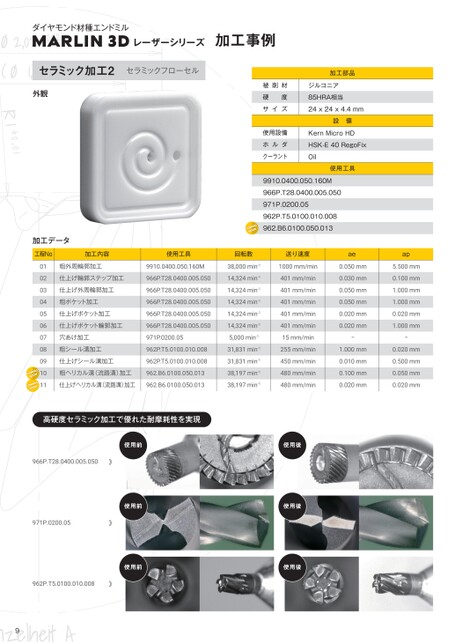

p.9加工事例 セラミック加工2

ダイヤモンド材種エンドミル
MARLIN3DレーザーシリーズMARLIN3Dレーザーシリーズ 加工事例 加工事例
セラミック加工2セラミックフローセル
加工部品
被削材 ジルコニア
外観 外観 硬度 85HRA相当 硬度 85HRA相当
サイズ 24x24x4.4mm
設備
使用設備 KernMicroHD
ホルダ HSK-E40RegoFix
クーラント Oil
使用工具
9910.0400.050.160M
966P.T28.0400.005.050
971P.0200.05
962P.T5.0100.010.008
962.B6.0100.050.013
加工データ
工程No 加工内容 工程No使用工具加工内容 回転数 使用工具送り速度 回転数 ae 送り速度 ap
01 粗外周輪郭加工 9910.0400.050.160M 01 粗外周輪郭加工 38,000min-19910.0400.050.160M1000mm/min 38,000min-1 0.050mm 1000mm/min 5.500mm 0.050mm
02 仕上げ輪郭ステップ加工 966P.T28.0400.005.050仕上げ輪郭ステップ加工14,324min-1966P.T28.0400.005.050 02 401mm/min 14,324min-1 0.030mm 401mm/min 0.100mm 0.030mm
03 仕上げ外周輪郭加工 966P.T28.0400.005.050仕上げ外周輪郭加工 03 14,324min-1966P.T28.0400.005.050 401mm/min 14,324min-1 0.050mm 401mm/min 1.000mm 0.050mm
04 粗ポケット加工 966P.T28.0400.005.050 04 粗ポケット加工 14,324min-1966P.T28.0400.005.050 401mm/min 14,324min-1 0.050mm 401mm/min 1.000mm 0.050mm
05 仕上げポケット加工 966P.T28.0400.005.050仕上げポケット加工 05 14,324min-1966P.T28.0400.005.050 401mm/min 14,324min-1 0.020mm 401mm/min 0.020mm 0.020mm
06 仕上げポケット輪郭加工 966P.T28.0400.005.050 06 仕上げポケット輪郭加工14,324min-1966P.T28.0400.005.050 401mm/min 14,324min-1 0.020mm 401mm/min 1.000mm 0.020mm
07 穴あけ加工 971P.0200.05穴あけ加工 07 5,000min-1971P.0200.0515mm/min 5,000min-1 ー 15mm/min
08 粗シール溝加工 962P.T5.0100.010.008粗シール溝加工 08 31,831min-1962P.T5.0100.010.008255mm/min 31,831min-1 1.000mm 255mm/min 0.020mm 1.000mm
09 仕上げシール溝加工 962P.T5.0100.010.008仕上げシール溝加工31,831min-1962P.T5.0100.010.008450mm/min 09 31,831min-1 0.010mm 450mm/min 0.500mm 0.010mm
10 粗ヘリカル溝(流路溝)加工 962.B6.0100.050.013粗ヘリカル溝(流路溝)加工38,197min-1962.B6.0100.050.013480mm/min 10 38,197min-1 0.100mm 480mm/min 0.050mm 0.100mm
11 仕上げヘリカル溝(流路溝)加工 962.B6.0100.050.013仕上げヘリカル溝(流路溝)加工38,197min-1962.B6.0100.050.013480mm/min 11 38,197min-1 0.020mm 480mm/min 0.020mm 0.020mm
高硬度セラミック加工で優れた耐摩耗性を実現
使用前 使用前 使用後 使用後
966P.T28.0400.005.050
使用前 使用前 使用後 使用後
971P.0200.05
使用前 使用前 使用後 使用後
962P.T5.0100.010.008
9